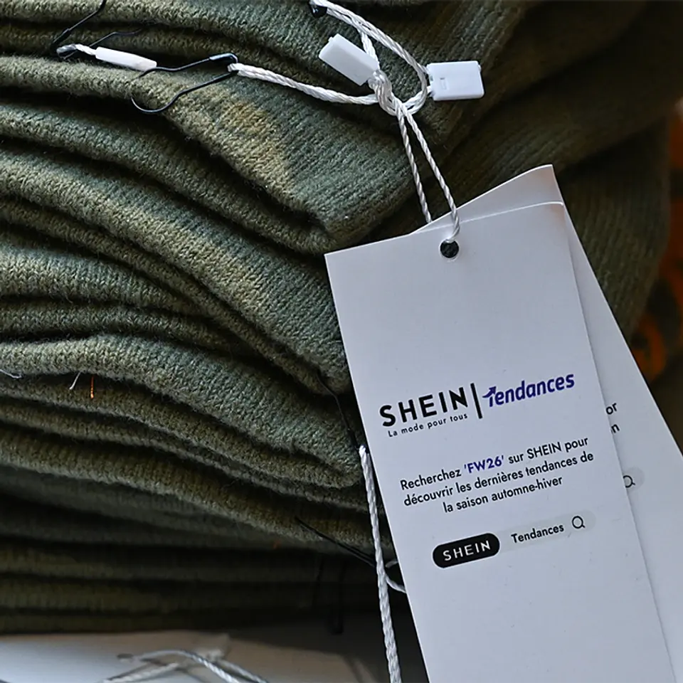
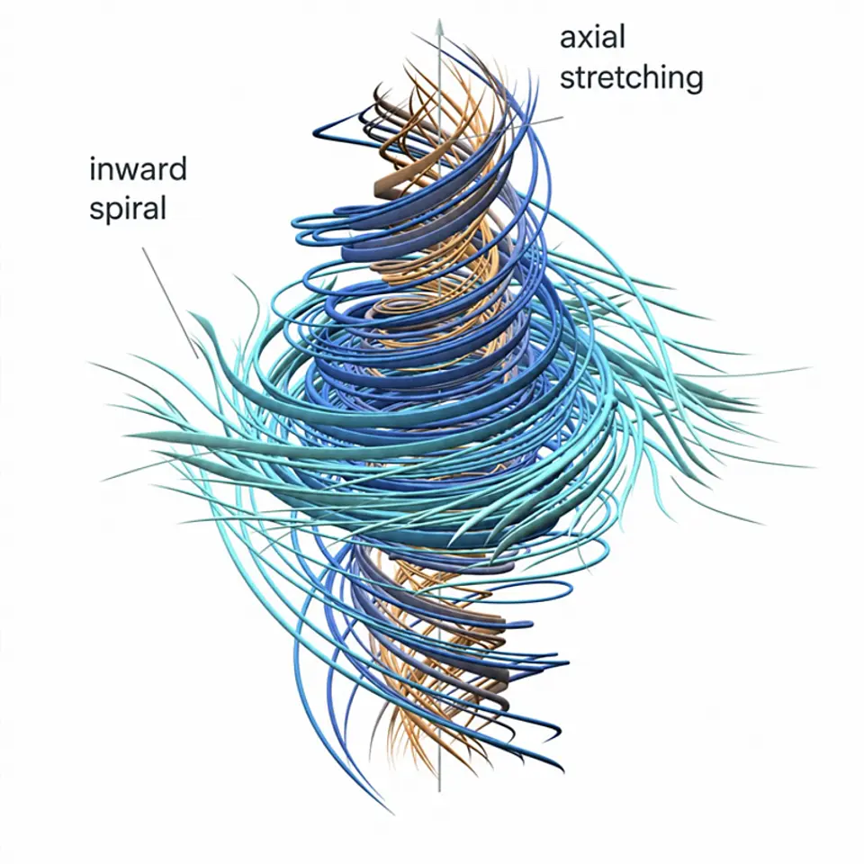
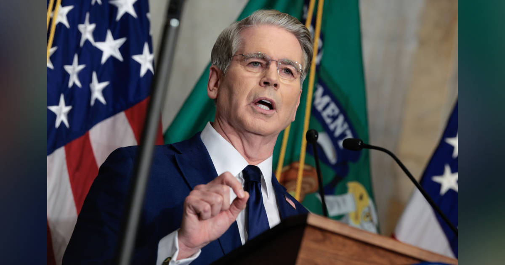
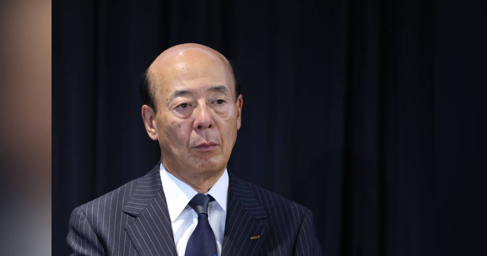

01
【ビジネス大転換】世界はもう「速さ」の次に向かっている
発行日時：2026年9月9日 05:30 JST ・ NewsPicks編集部

あなたに関係ありそうな理由
速さと安さを追う事業が、回収・再生・規制を含む設計へ進む時、どのコストを誰が負担するのかを考える材料になるためです。
概要
この記事は、SHEINを一社だけの異例な存在と見るのではなく、既製服、SPA、オンライン販売が追ってきた「より速く、安く、多く」の延長に置く。オートクチュールの時代に、あらかじめデザインを示し、季節ごとに新作を出す仕組みが生まれた。そこから、必要になったから作る服は、新しい物が出たから買う商品へ変わり、在庫を減らすための小ロット生産や需要予測が高度化した。記事は、SHEINの仕組みには売れ残りを減らせる可能性がある一方、速さと低価格を維持することで、輸送、労働、回収・再生の問題が残ると指摘する。環境省の2025年の数字では、家庭から手放された衣類のうちリユースは35％、リサイクルは7％で、残る58％は焼却などで処分された。リサイクルに回る衣類にも雑巾などへの利用が含まれ、衣服から衣服へ戻る循環は限られる。欧州では、売った後まで生産者が責任を負う拡大生産者責任の考え方が広がり、回収、修理、再資源化を製品設計に組み込む動きが強い。記事はこれを環境だけの問題でなく、素材の調達、供給途絶、地政学リスク、投資判断に直結する経営課題として扱う。規制への対応を部門任せにすると、価格、物流、デザイン、顧客体験は分断されたままになる。消費者も「正しいから」だけでは動きにくい。回収を便利にし、欲しいと思える商品や体験と結び付けて初めて循環が回る。表示コメントでも、低価格を利用することと使い捨てを促す設計を分けて考えるべきだという意見が出た。速さを否定するより、豊かさの後ろに残る負荷を見える形にし、誰が回収し、どの費用を負担し、どう改善したかを継続して示せるかが問われる。商品数、返品、配送、素材を別々にせず同じ帳票で追うことが、次の競争力になる。さらに、回収拠点を増やすだけでは十分でなく、素材表示、修理可能性、返送時の物流、再生後の品質までを一続きで設計する必要がある。企業が便利さと選びたくなる魅力を用意し、消費者が戻した物の行き先を確かめられる時、循環は我慢ではなくサービスとして定着しやすい。自治体、販売者、素材メーカー、物流事業者が別々の指標を持てば、責任の切れ目を見つけにくい。売上だけでなく、回収率、再生率、返品、配送距離を並べる仕組みが要る。
仕事や会話で使える一言
「速さの次は、売った後まで責任を持てる仕組みをつくる競争です。」
NewsPicks原文を読む
02
【超ド級】OpenAIが、数学の「1億円問題」を3日半で解決
発行日時：2026年9月9日 05:30 JST ・ The New York Times（NewsPicks掲載）

あなたに関係ありそうな理由
AIによる成果を受け取るだけでなく、検証・理解・計算資源の使い方をどう設計するかを考える材料になるためです。
概要
記事は、OpenAIが未公開モデルを使い、流体の運動を記述するナビエ・ストークス方程式を巡るミレニアム懸賞問題に関する成果を出したと発表したことを伝える。同社によると、最大1万のAIエージェントを使い、約88時間で解に至ったという。この問題は、方程式が常に滑らかな解を持つのか、ある条件で特異点が生じて解が壊れるのかを問う。日常の水や空気の流れをそのまま予言する結論ではなく、数学的に発散する解が存在するかを扱う点を区別する必要がある。ミレニアム懸賞問題は七つあり、これまで解決が認められたものは一つだけで、正しさが確定すれば賞金100万ドルの対象になる。だが、発表がそのまま定説になるわけではない。専門家による査読、独立した再現、証明の読み直しが必要で、表示コメントにも、存在と非存在のどちらを示したのか、形式証明に落とせるのかを慎重に読むべきだという指摘があった。記事では、数学者のテレンス・タオ氏が、AIが難問を次々に解く環境では人間が学ぶ意欲を失う懸念に触れたことも紹介する。一方で、研究者がAIエージェントの集団に橋渡し役を置き、探索の方向を絞る試みも進む。OpenAIは強化学習や、証明を機械検証するLeanの利用に言及するが、大量の計算資源には数百万ドル規模の費用がかかる可能性がある。AIの価値は、速く答えを出すことだけでは測れない。どの仮定を置き、どの探索を捨て、第三者がどこまで検証できる形で成果を残すかが重要になる。別の研究者が似た問題に取り組んでいたとの論点もあり、先行研究との関係を明らかにすることも信頼に関わる。研究の入口を広げる力と、結果を理解できる人の層を厚くする努力を同時に考えたい。発表の華やかさと、検証の地道さを分けて追う姿勢が必要だ。また、コードを公開するだけでなく、どの部分を人間が読んで理解し、どの部分をソフトウェアが形式的に検査したのかを示すことで、結論の再利用可能性も上がる。研究の速度が上がるほど、教育、査読、計算資源へのアクセスが一部の組織に集中しないようにする工夫も課題になる。「解けた」という見出しと、証明を共同で育てる過程を分けて評価したい。
仕事や会話で使える一言
「AIが答えを出しても、検証できる形で理解を残せるかが次の問いです。」
NewsPicks原文を読む
03
ベッセント長官、円売りに賭けるトレーダーをけん制「胴元は私だ」
発行日時：2026年9月9日 06:52 JST ・ Bloomberg

あなたに関係ありそうな理由
為替の急変を、発言の強さだけでなく、金利・介入・資金フローの関係から読む材料になるためです。
概要
ブルームバーグの記事は、ベッセント米財務長官が円売りに賭けるトレーダーをけん制する文脈で、日本の為替介入や日本銀行の政策について語ったと伝える。長官は、日本と米国が7月末に円買いの協調介入を行った際、日本政府と日銀が何をするかをよく把握していたという趣旨の発言をし、自らを市場の「胴元」にたとえた。記事執筆時点で円は1ドル153円台で推移し、政策を巡る言葉が市場参加者のポジションや短期の値動きに影響しうる場面を描く。記事は、日銀が政策金利を引き上げる方向にあるという長官の見方と、7月30日から8月26日にかけて日本が実施したとされる15兆3993億円規模の介入にも触れる。ただし、為替相場を発言一つで説明することはできない。金利差、将来の金融政策の予想、輸出入や投資に伴う資金移動、短期の投機的取引が重なって動くからだ。表示コメントにも、発言をそのまま事実認定せず、口先介入としてどう受け止められるかを考えるべきだという意見や、中央銀行の独立性と情報の透明性への懸念があった。日本側が実際にどの水準を防衛すると決めているのか、米国が何を知り、何に関与したのかは、この記事だけで確定しない。市場参加者は強い言葉を手掛かりにヘッジを変えるが、政策担当者にとっては、意図が誤読されれば信頼を損なうリスクもある。企業や家計が見るべきなのは、特定のレートを当てることより、円高・円安のどちらに振れても資金繰りや調達価格がどの程度動くかだ。輸入コスト、外貨建ての売上、海外投資の評価を分け、金利やヘッジの前提を定期的に見直す必要がある。記事は、発言の派手さの裏に、通貨政策が国内だけで完結しない現実を見せる。誰の発言か、いつの取引か、実際の資金フローにどうつながったかを時系列で確かめて読みたい。為替を政治的な演出だけに閉じず、実需と制度の両方から見ることが大切だ。介入の有無や規模については、公式の公表資料と取引データを照合し、後から修正されうる見通しとは分けるべきだ。短期の値動きに煽られず、輸入・輸出・借入の契約でどの時点の為替を前提にしているかを確認することが実務的な備えになる。記録を残すことが、次の判断を支える。
仕事や会話で使える一言
「強い発言より、金利差と資金フローが続くかを見たいです。」
NewsPicks原文を読む
04
アシックスが怒りの自己株式取得－株価は「適正水準からかい離」
発行日時：2026年9月9日 13:40 JST ・ Bloomberg

あなたに関係ありそうな理由
自己株買いを単なる株価対策でなく、成長投資と資本配分の説明責任として読む材料になるためです。
概要
記事は、アシックスが株価が適正水準からかい離しているとして、上限700億円の自己株式取得を決めたことを伝える。取得上限は2000万株、発行済み株式の約2.82％で、9月10日から2027年3月31日までに市場から買い付ける計画だ。9月30日には2500万株を消却する方針も示した。過去最大の買い戻しは、単に余った現金を配る話ではなく、経営陣が現在の株価に対しどのようなメッセージを出すかという資本政策でもある。アシックスは2022年以降、業績を伸ばし、今期の営業利益見通しを前年同期比37％増の1950億円へ上方修正した。一方で株価は8月17日の5440円から4049円まで約26％下げ、発表後は一時3.4％高の4187円となった。記事では、海外競合による値引きや在庫への警戒が株価の重しになった一方、中国やインドでの成長を見込む経営側の説明を扱う。ブルームバーグ・インテリジェンスは、今回の買い戻しが一株利益を約3％押し上げると試算する。表示コメントでは、取得と消却の組み合わせは資本規律を示す強い合図だという評価がある一方、11月17日に示す予定の中期経営計画で、投資、M&A、株主還元をどう配分するかが本当の論点だという見方が出た。自己株買いは、事業への投資よりも株主への還元を優先する判断にもなり得るため、額の大きさだけでは良し悪しを決められない。競争力を保つ研究開発、供給網、ブランド投資に必要な資金と比べ、いつ、どの条件なら買い戻すのかを説明する必要がある。企業を見る側は、短期的な株価反応だけでなく、発行株数の変化、取得価格、消却、将来の利益計画を追いたい。資本政策を一度のニュースで終わらせず、約束した成長と還元の両方が実行されるかを時系列で確かめることが大切だ。買い戻しが経営の自信を表すなら、その自信を支える現場の競争力と投資計画も同時に開示されるべきである。海外での販売拡大に伴い、為替、在庫、値引きの影響も変わる。市場が評価する数字と、実際に顧客へ価値を届けるための投資を混同せず、次の計画で何を優先するのかを見守りたい。キャッシュを使う選択の根拠を、株価の水準だけでなく事業の時間軸で説明できるかが問われる。
仕事や会話で使える一言
「自己株買いは、経営陣の自信と資本配分の両方を問うメッセージです。」
NewsPicks原文を読む
05
【世界のニュース７選】オープンAI、数学の超難問「解決」も論争勃発
発行日時：2026年9月9日 17:00 JST ・ The Economist（NewsPicks掲載）
あなたに関係ありそうな理由
国際ニュースを、単なる出来事の列ではなく、通商・資源・輸送・気候の異なる経路として捉える材料になるためです。
概要
この記事は、The Economistの短い国際ニュースを七項目にまとめ、AI、関税、中東情勢、外交、資源、気候の動きを並べる。最初に扱うのは、OpenAIがナビエ・ストークス方程式を巡る難問を解いたと発表した件で、研究者の間で証明の評価を巡る論争が起きているという。重要なのは、AIが出した結論の派手さより、専門家が検証できる形で議論が続くかだ。次に、米国がカナダからの二輪車、乳製品、酒類の輸入を禁じる方針を示したと伝える。カナダが200億ドル規模の関税措置を最大50％まで引き上げたことへの対抗で、貿易摩擦は完成品だけでなく、部品の調達や小売価格にも波及しうる。中東では、イランがヨルダンの米軍基地へのミサイル攻撃を主張し、フーシ派による攻撃も報じられ、ブレント原油は1バレル100ドル近辺で推移した。記事の数字や当事者の主張は、紛争下では独立に確かめにくいため、輸送、安全、保険の実際の変化と分けて読む必要がある。中国の習近平国家主席と英国の新首相バーナム氏の関係、英国がイスラエル入植地の企業に制裁を加えたことも紹介される。外交上の表明が、企業活動や人の移動にどう結び付くかは、制度の実施内容まで確認したい。アイスランドでは、トランプ氏が北米に星条旗を重ねたAI生成画像に抗議が起きた。LIVゴルフは5億〜10億ドルの負債を抱えて連邦破産法11条の適用を申請し、英国の港では水温変化によりタコの水揚げが急増したという。七つの話題は一つの結論にまとめられないが、通商、エネルギー、情報、気候が別の時間軸で生活と事業に届くことを示す。表示コメントにも、気候の変化が食文化や地域経済に及ぼす影響を追うべきだという声があった。速報を読んだ後は、誰の発表か、何が実施済みか、次に影響を受ける取引や地域はどこかを分けて確かめたい。見出しの勢いより、制度と現場の変化を追い続ける姿勢が必要になる。特に紛争、関税、気候については、発表時点と実施時点の間に差があり、企業の調達判断には猶予と制約の両方が生じる。個別の変化を関連づけ過ぎず、一次情報と現場のデータを往復する必要がある。そこに報道の更新時刻も重ねたい。
仕事や会話で使える一言
「国際ニュースは、一つの結論より、誰の調達・移動・安全に届くかを分けて追いたいです。」
NewsPicks原文を読む